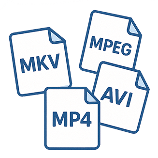
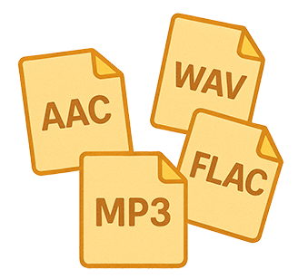
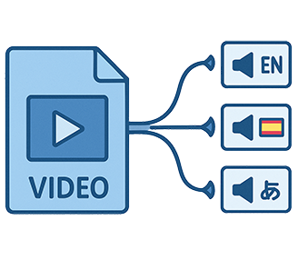
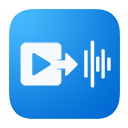

AudioCatch
AudioCatch is a tool that converts video to audio for macOS. It features a clean and easy-to-use interface.

Multiple Video Formats
Supports various video formats: mp4, flv, f4v, mkv, mpeg, avi, wmv, asf, rm, rmvb, div, dv, divx, vob, dat and more.

Various Audio Outputs
Export to aac, mp3, ogg, wav, flac — whatever you need.

Channel Selection
Select which audio channel to extract from the video.

Custom Output Options
Set sample rate, channels, bitrate, and more for precise control.